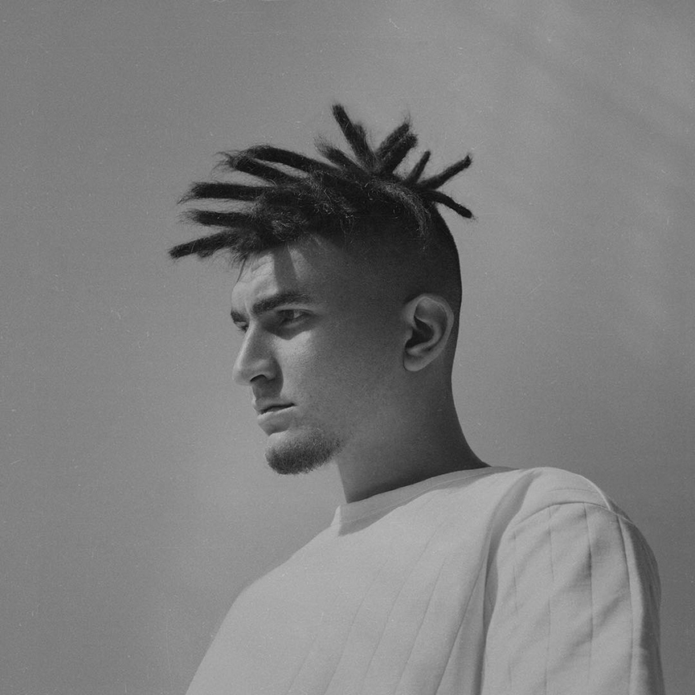
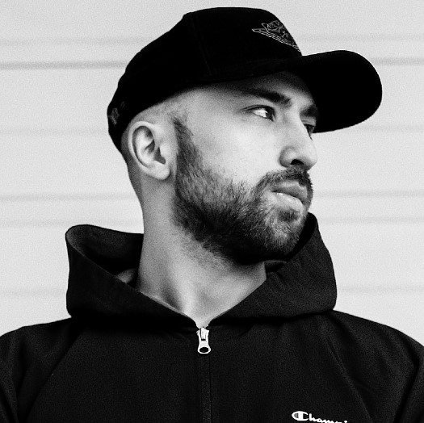

История группы MiyaGi & Andy Panda началась в 2015 году. Два талантливых исполнителя из Владикавказа решили создать творческий дуэт. Название к нему выбирали долго, а затем просто объединили свои псевдонимы. Под Andy Panda выступает Сослан Бурнацев, он же Эндшпиль. Под MiyaGi работает Азамат Кудзаев, он же Shau.
Чтобы развивать свою творческую деятельность, Азамат Кудзаев переехал в Санкт Петербург. Там он основал собственную музыкальную студию, куда позже по случайному стечению обстоятельств пришел Сослан Бурнацев. Исполнители познакомились друг с другом еще во Владикавказе. Там оба они записывались на одной студии Dope Records, но работали всегда раздельно. Азамату пришла идея совместного сотрудничества со своим земляком. Сослан согласился, и музыканты начали активную работу в студии. Для своей группы они выбрали тот самый стиль, который был придуман Бурнацевым, — объединяющий рэп и рэгги. Ребята записали несколько треков, но поняли — достаточного финансирования на их продвижение нет. Поэтому они выложили песни в социальных сетях и на YouTube. Их музыка понравилась большой аудитории, что принесло группе первую популярность.
Участники лейбла

Азамат Кудзаев родился 13 декабря 1990 года во Владикавказе. Отец — известный хирург и руководитель Центра ортопедии и эстетической хирургии в Северной Осетии. Окончил медицинскую академию. Занимается рэпом с 2007 года. В 2007—2013 гг. выступал под псевдонимом Shau, затем сменил его на MiyaGi. Свой псевдоним взял в честь мистера Мияги из фильма «Малыш-каратист». В 2009 году Азамат вступил в творческое объединение Dope Records, куда также, помимо Эндшпиля, входили Намо Миниган, Shuga, Асаб, SH Kera, группа The GuyS. В августе 2014 года Азамат основал собственный лейбл Asata, куда, помимо него, вошли Намо Миниган и Amigo. За время пребывания в Asata Азамат выпустил, ставшие успешными на тот момент, клипы на треки «Колибри», «Дом», «Бонни».

Сослан Бурнацев (Andy Panda) родился 2 октября 1995 года во Владикавказе. В юности играл в футбол за юношескую команду «Спартак» (Владикавказ). Получил образование пищевого технолога. Начал заниматься рэпом с 16 лет. Свой псевдоним взял под впечатлением от фильма «Адский эндшпиль». В 2012 году вступил в объединение Dope Records, которое покинул в 2014 году. В том же году выпустил дебютный сольный альбом «Накипь», а через год выпустил второй альбом «Тютелька в тютельку». Также в 2015 году вышел совместный альбом Эндшпиля и владикавказского рэпера SH Kera «Бездельники»

Александр Селезнев (род. 22 июня 1996 года, Астрахань, Россия), более известный под сценическим псевдонимом TumaniYO — российский хип-хоп-исполнитель, участник лейбла Hajime Records. Впервые о себе громко заявил в 2018 году синглом «It's My Life», совместно с Эндшпилем. Спустя полгода он выпустил свой дебютный альбом «FOG#ONE».

Под псевдонимом Kadi скрывается Кадиев Хетаг. Это темная лошадка, о которой нет никаких данных. Да и сам рэпер не спешит открывать карты, кто он есть на самом деле. Исполнитель отмечает свой день рождение 30 августа. Свои синглы молодой автор выставляет на суд пользователей ВКонтакте. В частности при совместном сотрудничестве с Miyagi была написана песня «Родной край». В создании также участвовал Владимир Вахо.

В интернете почти нету информации о даном исполнители. HLOY, наверное, так же как и Kadi не хочет распостранять о себе информацию. Известность к этому певцу пришла после того, как он попал в лейбл “Hajime Records” и только набирает свои обороты. Все, что известно, это то, что он очень талантливый исполнитель. Записывает треки вместе с другими ребятами из Hajime Records и переодически их выкладывает. Больше информации о HLOY нам пока не известно. Надеемся что в будущем сплывет больше даных об этом гениальном певце. Остается только ждать и надеяться.

Информации о личной жизни Castle в интернете, к сожелению, нет. Известно только что он, записывает треки совместно с колегами из Hajime Records, умеет играть на гитаре и имеет прекрасный вокал. Больше нам неизвестно...

Алан Макиев родился во Владикавказе в 1999 году. Похоже, этот город можно объявлять неофициальной столицей русского рэпа — в конце концов, сами Miyagi & Andy Panda тоже считают его родным домом. Прокладывать путь к славе Алан начал собственными усилиями: сам писал тексты и музыку, сводил их и редактировал. Сам же и выбрал себе псевдоним; на всякий случай, произносится он как «Оллэйн». Исполнитель активно выкладывал в сеть видео с собственными песнями и каверами на известных артистов и участвовал в различных конкурсах.

Пока Баззаев не может похвастаться альбомом. Но зато на его счету несколько бомбических треков. В особенности заслуживают внимания композиции Somebody, Marmalade, «Темнота» и «В огне». В текстах парень частенько поднимает философские темы и размышляет о разных аспектах жизни. Радует, что синглы Славы не лишены смысловой нагрузки. В общем, то, что нужно, для прослушивания холодным одиноким вечером.
Some text in the Modal..
×